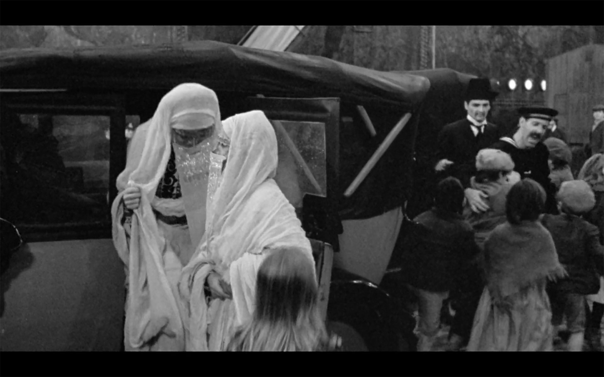

The Accidental Movie Buff
The Accidental Movie Buff
Growing up in NYC in a house full of girls,
who would soon become women; with different interests from myslef, I was often left to my own devices. We were Seventh Day Adventist so there wasn't much one could partake in outside of church activities. When those were over there wasn't much activity left but the T.V.
Summers were rough. The girls would leave to bible camp for the entire summer, leaving me at home because I was always too young to hang. It gave me a complex- I hated my chronological age. I felt like it was my greatest obstacle. My daily goal was to learn all of the things my older sisters knew, so that they wouldn't mind letting me hangout with them when their friends came to visit, but nothing seemed to work. I read the books they read, listened to the music they danced too, hell I even learned words I couldn't spell nor knew the meaning too. Nothing seemed to work.

When I turned 14 my mom bought me a DVD player from a store that was going out of business. This DVD player would later be so instrumental to my youth development- that it would later dictate my profession in the years to come. I got a job at Mcdonalds to accompany my DVD player, because now I needed to get some flix to watch. I discovered Virgin Mega store which was located in Manhattan's Time Square.
I both saved and spent every penny, acquiring new DVDs non stop. I began to span time, and globe from my bedroom. After having some of the most blissfull moments of my young life; the DVD player decided to malfunction. Oh the devastation! I patiently saved up all of my money and purchased a laptop which had the same function of playing DVD's and CDR's. Suddenly life was back, and I commenced my travel from where I had once left off.
Visiting 1920's Europe was one of my favorite things to do. I soon learned that you can screen capture using functions on the laptop, that would take photos of the film scenes so that you can save them to view for later. I began creating a photo bank documenting the costume or the scene.
Now that I am an adult, I use those very same images to reference my work, or what the vision is when articulating an Aesthetic. As the band "in deep" once sang "last night the Dj saved my life" - My version would be "that night the movies saved my life from a broken heart."
FIN